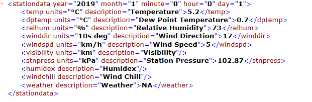
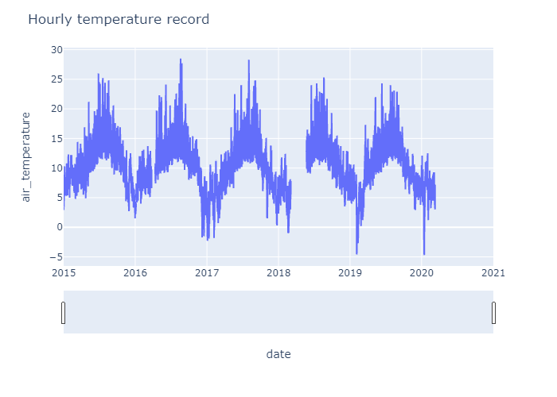

ECCC climate data

- Extract hourly, daily and monthly climate data from ECCC datamart
In this post, we will see how to automatically download all weather data for one station from environment and climate change canada using Python librairies.
Here’s the URL to get historical data.
We will use a daily updated list of Climate stations in the National Archive available on this link.
As usual, we import our python librairies:
import os
import wget
import numpy as np
import shutil
import xml.etree.ElementTree as ET
import pandas as pd
First, we can open and read the list of Climate stations using Pandas:
df = pd.read_csv('J:/Donnees_Stations/Donnees_EC/Codes/Station_Inventory_EN.csv', sep=',', skiprows=3)
df.head()
| | Name | Province | Climate ID | Station ID | WMO ID | TC ID | Latitude (Decimal Degrees) | Longitude (Decimal Degrees) | Latitude | Longitude | Elevation (m) | First Year | Last Year | HLY First Year | HLY Last Year | DLY First Year | DLY Last Year | MLY First Year | MLY Last Year |
|---:|:-----------------------|:-----------------|-------------:|-------------:|---------:|--------:|-----------------------------:|------------------------------:|-----------:|------------:|----------------:|-------------:|------------:|-----------------:|----------------:|-----------------:|----------------:|-----------------:|----------------:|
| 0 | ACTIVE PASS | BRITISH COLUMBIA | 1010066 | 14 | nan | nan | 48.87 | -123.28 | 485200000 | -1231700000 | 4 | 1984 | 1996 | nan | nan | 1984 | 1996 | 1984 | 1996 |
| 1 | ALBERT HEAD | BRITISH COLUMBIA | 1010235 | 15 | nan | nan | 48.4 | -123.48 | 482400000 | -1232900000 | 17 | 1971 | 1995 | nan | nan | 1971 | 1995 | 1971 | 1995 |
| 2 | BAMBERTON OCEAN CEMENT | BRITISH COLUMBIA | 1010595 | 16 | nan | nan | 48.58 | -123.52 | 483500000 | -1233100000 | 85.3 | 1961 | 1980 | nan | nan | 1961 | 1980 | 1961 | 1980 |
| 3 | BEAR CREEK | BRITISH COLUMBIA | 1010720 | 17 | nan | nan | 48.5 | -124 | 483000000 | -1240000000 | 350.5 | 1910 | 1971 | nan | nan | 1910 | 1971 | 1910 | 1971 |
| 4 | BEAVER LAKE | BRITISH COLUMBIA | 1010774 | 18 | nan | nan | 48.5 | -123.35 | 483000000 | -1232100000 | 61 | 1894 | 1952 | nan | nan | 1894 | 1952 | 1894 | 1952 |
In this Dataframe, we have all informations to select and work with climate stations:
- Name : name of the station
- Province: province of the station
- Climate ID: Climate ID number
- Station ID: Station ID number
- Latitude: latitude of the station in decimal degrees
- Longitude: longitude of the station in decimal degrees
- First Year: first year of record
- Last Year: last year of record
- HLY First Year: first year of hourly record
- HLY Last Year: last year of hourly record
- DLY First Year: first year of daily record
- DLY Last Year: last year of daily record
- MLY First Year: first year of monthly record
- MLY Last Year: last year of monthly record
We can easily create 3 dataframes to distinguish hourly, daily and monthly datasets:
df_hourly = df[['Name', 'Province','Climate ID','Station ID','Latitude (Decimal Degrees)',
'Longitude (Decimal Degrees)','HLY First Year','HLY Last Year']].dropna()
df_daily = df[['Name', 'Province','Climate ID','Station ID','Latitude (Decimal Degrees)',
'Longitude (Decimal Degrees)','DLY First Year','DLY Last Year']].dropna()
df_monthly = df[['Name', 'Province','Climate ID','Station ID','Latitude (Decimal Degrees)',
'Longitude (Decimal Degrees)','MLY First Year','MLY Last Year']].dropna()
We will use wget python command to download data using a specific path:
wget.download('http://climate.weather.gc.ca/climate_data/bulk_data_e.html?format=csv&stationID='+str(int(id_stat))+'&Year='+str(year)+'&Month=01&Day=14&timeframe=1')
With:
| year | year of the record |
| month | month of the record |
| format | [csv |
| timeframe = 1 | for hourly data |
| timeframe = 2 | for daily data |
| timeframe = 3 | for monthly data |
- Day: the value of the "day" variable is not used and can be an arbitrary value
- For another station, change the value of the variable stationID
- For the data in XML format, change the value of the variable format to xml in the URL.
1- Working with hourly data:
df_hourly.head()
| | Name | Province | Climate ID | Station ID | Latitude (Decimal Degrees) | Longitude (Decimal Degrees) | HLY First Year | HLY Last Year |
|---:|:------------------|:-----------------|-------------:|-------------:|-----------------------------:|------------------------------:|-----------------:|----------------:|
| 28 | DISCOVERY ISLAND | BRITISH COLUMBIA | 1012475 | 27226 | 48.42 | -123.23 | 1997 | 2020 |
| 39 | ESQUIMALT HARBOUR | BRITISH COLUMBIA | 1012710 | 52 | 48.43 | -123.44 | 1994 | 2020 |
| 49 | KELP REEFS | BRITISH COLUMBIA | 1013998 | 10853 | 48.55 | -123.24 | 1997 | 2020 |
| 53 | MALAHAT | BRITISH COLUMBIA | 1014818 | 10730 | 48.58 | -123.58 | 1991 | 1992 |
| 54 | MALAHAT | BRITISH COLUMBIA | 1014820 | 65 | 48.57 | -123.53 | 1994 | 2020 |
We want to extract hourly observations from DISCOVERY ISLAND in 2019. So we will select id_stat = 27226, year = 2019 and timeframe = 1 .
- We want to work in csv format.
id_stat = 27226
year = 2019
wget.download('http://climate.weather.gc.ca/climate_data/bulk_data_e.html?format=csv&stationID='+str(int(id_stat))+'&Year='+str(year)+'&Month=01&Day=14&timeframe=1')
'en_climate_hourly_BC_1012475_001-2019_P1H.csv'
df = pd.read_csv('en_climate_hourly_BC_1012475_001-2019_P1H.csv', sep=',', skiprows=0)
df.head(2)
| | Longitude (x) | Latitude (y) | Station Name | Climate ID | Date/Time | Year | Month | Day | Time | Temp (°C) | Temp Flag | Dew Point Temp (°C) | Dew Point Temp Flag | Rel Hum (%) | Rel Hum Flag | Wind Dir (10s deg) | Wind Dir Flag | Wind Spd (km/h) | Wind Spd Flag | Visibility (km) | Visibility Flag | Stn Press (kPa) | Stn Press Flag | Hmdx | Hmdx Flag | Wind Chill | Wind Chill Flag | Weather |
|---:|----------------:|---------------:|:-----------------|-------------:|:-----------------|-------:|--------:|------:|:-------|------------:|------------:|----------------------:|----------------------:|--------------:|---------------:|---------------------:|----------------:|------------------:|----------------:|------------------:|------------------:|------------------:|-----------------:|-------:|------------:|-------------:|------------------:|----------:|
| 0 | -123.23 | 48.42 | DISCOVERY ISLAND | 1012475 | 2019-01-01 00:00 | 2019 | 1 | 1 | 00:00 | 5.2 | nan | 0.7 | nan | 73 | nan | 17 | nan | 5 | nan | nan | nan | 102.87 | nan | nan | nan | nan | nan | nan |
| 1 | -123.23 | 48.42 | DISCOVERY ISLAND | 1012475 | 2019-01-01 01:00 | 2019 | 1 | 1 | 01:00 | 5.2 | nan | 0.7 | nan | 72 | nan | 17 | nan | 5 | nan | nan | nan | 102.87 | nan | nan | nan | nan | nan | nan |
url_template = "http://climate.weather.gc.ca/climateData/bulkdata_e.html?format=csv&stationID=5415&Year={year}&Month={month}&timeframe=1&submit=Download+Data"
url_template
'http://climate.weather.gc.ca/climateData/bulkdata_e.html?format=csv&stationID=5415&Year={year}&Month={month}&timeframe=1&submit=Download+Data'
- If we work in xml format:
tmp_file = wget.download('http://climate.weather.gc.ca/climate_data/bulk_data_e.html?format=xml&stationID='+str(int(id_stat))+'&Year='+str(year)+'&Month=01&Day=14&timeframe=1')
tree=ET.parse(tmp_file)
os.remove(tmp_file)
root=tree.getroot()
Here is the structure of xml file and informations we could find in ‘stationinformation’ child:
stationsinfo=root.find('stationinformation')
stationsinfo[0].text, 'latitude', stationsinfo[3].text, 'longitude', stationsinfo[4].text
###############################################################
######### stationsinfo[0].text : station name
######### stationsinfo[1].text : province
######### stationsinfo[2].text : provider
######### stationsinfo[3].text : latitude
######### stationsinfo[4].text : longitude
('DISCOVERY ISLAND', 'latitude', '48.42', 'longitude', '-123.23')
Climate records are available in ‘station data’ child:
 Let’s extract Temperature data for one year:
stationsdata = root.findall('.//stationdata')
result = []
for stationdata in stationsdata :# loop over hourly values or child
champs=stationdata.find('temp')
tmp=np.array(result,"float")
result.append(champs.text)
tmp=np.array(result,"float")
To loop over years available for this station:
id_stat = 27226
yi = 2015
yf =2020
dataset = []
for year in range(yi,yf+1): ### loop over years
for month in range(1,13):
tmp_file = wget.download('http://climate.weather.gc.ca/climate_data/bulk_data_e.html?format=xml&stationID='+str(int(id_stat))+'&Year='+str(year)+'&Month='+str(month)+'&Day=14&timeframe=1')
tree=ET.parse(tmp_file)
os.remove(tmp_file)
root=tree.getroot()
stationsdata = root.findall('.//stationdata')
temperature = []
date = []
data = []
for stationdata in stationsdata:
date.append(stationdata.attrib['year']+
'-'+stationdata.attrib['month']+
'-'+stationdata.attrib['day']+
' '+stationdata.attrib['hour']+':00')
champs=stationdata.find('temp')
tmp = np.array(champs.text,"float")
if tmp == 'nan':
temperature.append(np.nan)
else:
temperature.append(tmp) # loop over days in one year
data = {'date':date,
'air_temperature':temperature}
data = pd.DataFrame(data)
dataset.append(data)
dataset = pd.concat(dataset)
from tabulate import tabulate
print(tabulate(dataset.head(), headers='keys', tablefmt='pipe'))
| | date | air_temperature |
|---:|:--------------|------------------:|
| 0 | 2015-1-1 0:00 | 3 |
| 1 | 2015-1-1 1:00 | 2.9 |
| 2 | 2015-1-1 2:00 | 3 |
| 3 | 2015-1-1 3:00 | 3.1 |
| 4 | 2015-1-1 4:00 | 3.1 |
To save our dataframe into csv format:
dataset.to_csv("./Hourly_dataset.csv", index = False, header = True, sep = ',')
We Can make quick plot using plotly.express:
import plotly.express as px
import plotly
fig = px.line(dataset, x='date', y='air_temperature')
fig.update_layout(title_text='Hourly temperature record',
xaxis_rangeslider_visible=True)
 Follow this link for interactive plot:
To save our file in html:
import plotly.io as pio
pio.write_html(fig, file = 'file1.html', auto_open = True)
To save our file in png:
fig.write_image("file1.png")
2- Working with daily data:
We will do the same job with daily mean temperature for one Climate station:
df_daily.head()
| | Name | Province | Climate ID | Station ID | Latitude (Decimal Degrees) | Longitude (Decimal Degrees) | DLY First Year | DLY Last Year |
|---:|:-----------------------|:-----------------|-------------:|-------------:|-----------------------------:|------------------------------:|-----------------:|----------------:|
| 0 | ACTIVE PASS | BRITISH COLUMBIA | 1010066 | 14 | 48.87 | -123.28 | 1984 | 1996 |
| 1 | ALBERT HEAD | BRITISH COLUMBIA | 1010235 | 15 | 48.4 | -123.48 | 1971 | 1995 |
| 2 | BAMBERTON OCEAN CEMENT | BRITISH COLUMBIA | 1010595 | 16 | 48.58 | -123.52 | 1961 | 1980 |
| 3 | BEAR CREEK | BRITISH COLUMBIA | 1010720 | 17 | 48.5 | -124 | 1910 | 1971 |
| 4 | BEAVER LAKE | BRITISH COLUMBIA | 1010774 | 18 | 48.5 | -123.35 | 1894 | 1952 |
tmp_file = wget.download('http://climate.weather.gc.ca/climate_data/bulk_data_e.html?format=xml&stationID='+str(int(id_stat))+'&Year='+str(year)+'&Month=01&Day=14&timeframe=2')
tree=ET.parse(tmp_file)
os.remove(tmp_file)
root=tree.getroot()
Here is the structure of xml file and informations we could find in ‘stationinformation’ child:
Climate records are available in ‘station data’ child:

url_template = 'http://climate.weather.gc.ca/climate_data/bulk_data_e.html?format=xml&stationID='+str(int(id_stat))+'&Year='+str(year)+'&Month=01&Day=14&timeframe=2'
url_template
'http://climate.weather.gc.ca/climate_data/bulk_data_e.html?format=xml&stationID=5415&Year=2020&Month=01&Day=14&timeframe=2'
We want to extract 4 specific years for Climate station with ID=27226:
id_stat = 27226
df_daily[df_daily['Station ID'] == id_stat]['DLY First Year']
yi = 2015
yf = 2020
dataset = []
for year in range(yi,yf+1): ### loop over years
tmp_file = wget.download('http://climate.weather.gc.ca/climate_data/bulk_data_e.html?format=xml&stationID='+str(int(id_stat))+'&Year='+str(year)+'&Month=1&Day=14&timeframe=2')
tree=ET.parse(tmp_file)
os.remove(tmp_file)
root=tree.getroot()
stationsdata = root.findall('.//stationdata')
temperature = []
date = []
data = []
for stationdata in stationsdata:
date.append(stationdata.attrib['year']+
'-'+stationdata.attrib['month']+
'-'+stationdata.attrib['day'])
champs=stationdata.find('meantemp')
tmp = np.array(champs.text,"float")
if tmp == 'nan':
temperature.append(np.nan)
else:
temperature.append(tmp) # loop over days in one year
data = {'date':date,
'temperature':temperature}
data = pd.DataFrame(data)
dataset.append(data)
dataset = pd.concat(dataset)
dataset.head()
| | date | temperature |
|---:|:---------|--------------:|
| 0 | 2015-1-1 | nan |
| 1 | 2015-1-2 | nan |
| 2 | 2015-1-3 | nan |
| 3 | 2015-1-4 | nan |
| 4 | 2015-1-5 | nan |
We Can make quick plot using plotly.express:
import plotly.express as px
fig = px.line(dataset, x='date', y='temperature')
fig.update_layout(title_text='Time Series with Rangeslider',
xaxis_rangeslider_visible=True)
Follow this link for interactive plot:
dataset.to_csv("./Daily_dataset.csv", index = False, header = True, sep = ',')
import plotly.io as pio
pio.write_html(fig, file = 'file2.html', auto_open = True)
fig.write_image("file2.png")
3- Working with monthly data:
We will do the same job with monthly total precipitation for one Climate station:
df_monthly.head()
| | Name | Province | Climate ID | Station ID | Latitude (Decimal Degrees) | Longitude (Decimal Degrees) | MLY First Year | MLY Last Year |
|---:|:-----------------------|:-----------------|-------------:|-------------:|-----------------------------:|------------------------------:|-----------------:|----------------:|
| 0 | ACTIVE PASS | BRITISH COLUMBIA | 1010066 | 14 | 48.87 | -123.28 | 1984 | 1996 |
| 1 | ALBERT HEAD | BRITISH COLUMBIA | 1010235 | 15 | 48.4 | -123.48 | 1971 | 1995 |
| 2 | BAMBERTON OCEAN CEMENT | BRITISH COLUMBIA | 1010595 | 16 | 48.58 | -123.52 | 1961 | 1980 |
| 3 | BEAR CREEK | BRITISH COLUMBIA | 1010720 | 17 | 48.5 | -124 | 1910 | 1971 |
| 4 | BEAVER LAKE | BRITISH COLUMBIA | 1010774 | 18 | 48.5 | -123.35 | 1894 | 1952 |
tmp_file = wget.download('http://climate.weather.gc.ca/climate_data/bulk_data_e.html?format=xml&stationID='+str(int(id_stat))+'&Year='+str(year)+'&Month=01&Day=14&timeframe=3')
url_template = 'http://climate.weather.gc.ca/climate_data/bulk_data_e.html?format=xml&stationID='+str(int(id_stat))+'&Year='+str(year)+'&Month=01&Day=14&timeframe=3'
url_template
tree=ET.parse(tmp_file)
os.remove(tmp_file)
root=tree.getroot()
url_template
'http://climate.weather.gc.ca/climate_data/bulk_data_e.html?format=xml&stationID=27226&Year=2020&Month=01&Day=14&timeframe=3'
Climate records are available in ‘station data’ child:
We want to dowload monthly total precipitation for Climate station with ID=5415.
id_stat = 5415
df_monthly[df_monthly['Station ID'] == id_stat]['MLY First Year']
yi = int(df_monthly[df_monthly['Station ID'] == id_stat]['MLY First Year'].values)
yf = int(df_monthly[df_monthly['Station ID'] == id_stat]['MLY Last Year'].values)
dataset = []
tmp_file = wget.download('http://climate.weather.gc.ca/climate_data/bulk_data_e.html?format=xml&stationID='+str(int(id_stat))+'&Year=2020&Month=1&Day=14&timeframe=3')
tree=ET.parse(tmp_file)
os.remove(tmp_file)
root=tree.getroot()
stationsdata = root.findall('.//stationdata')
totprecip = []
date = []
data = []
for stationdata in stationsdata:
date.append(stationdata.attrib['year']+
'-'+stationdata.attrib['month'])
champs=stationdata.find('totprecip')
tmp = np.array(champs.text,"float")
if tmp == 'nan':
totprecip.append(np.nan)
else:
totprecip.append(tmp) # loop over days in one year
data = {'date':date,
'totprecip':totprecip}
data = pd.DataFrame(data)
dataset.append(data)
dataset = pd.concat(dataset)
dataset = dataset.drop_duplicates('date',keep='last')
dataset['date'] = pd.to_datetime(dataset['date'], format='%Y-%m')
import plotly.graph_objects as go
fig = go.Figure(data=[
go.Bar(name='totprecip1',
x=dataset[dataset['date'].dt.month == 7]['date'],
y=dataset[dataset['date'].dt.month == 7]['totprecip'])
])
fig.update_layout(
title='July monthly precipitation',
xaxis_tickfont_size=14,
yaxis=dict(
title='Total precipitation (mm)',
titlefont_size=16,
tickfont_size=14,
),
barmode='group',
bargap=0.15, # gap between bars of adjacent location coordinates.
bargroupgap=0.1 # gap between bars of the same location coordinate.
)
Follow this link for interactive plot.
dataset[dataset['date'].dt.month == 7].to_csv("./Monthly_dataset.csv", index = False, header = True, sep = ',')
import plotly.io as pio
pio.write_html(fig, file = 'file2.html', auto_open = True)
fig.write_image("file2.png")
Guillaume Dueymes
Data Scientist and Research Assistant
My research interests include data science, data management and climate science.